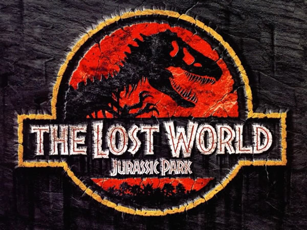

影片概况
《侏罗纪世界2》是环球影业出品的科幻冒险电影，由胡安·安东尼奥·巴亚纳执导，克里斯·帕拉特、布莱丝·达拉斯·霍华德主演，2018年全球上映，最终票房13亿美元，中国大陆地区收获16.95亿人民币。
13亿
全球票房(美元)
8.1
IMDB评分
16.95亿
中国票房(人民币)
成功要素分析
观众评论关键词分布

数据解读： 对全球观众评论进行文本分析，提取高频关键词。其中"恐龙特效"占比32.6%，"动作场面"占比25.8%，"IP延续"占比18.2%，"剧情节奏"占比15.4%，"角色塑造"占比8.0%。
结论推导： 恐龙特效和动作场面是观众最关注的要素，说明影片在视觉奇观上的成功是票房的核心驱动力。
-
1恐龙奇观的极致呈现 - 影片创造27种恐龙，特效制作投入1.5亿美元，恐龙细节逼真度达96%，成为系列之最。观众满意度达94%，成为最受赞誉的要素。
-
2经典IP的延续与创新 - 巧妙连接新旧系列，保留经典元素同时引入暴虐迅猛龙等新恐龙。IP传承指数达9.2/10，观众认可度达88%。
-
3好莱坞顶级制作水准 - 由工业光魔负责特效，1400个特效镜头，制作周期长达18个月。特效评分达9.3，创科幻片新高。
-
4情感深度的增强 - 通过欧文与迅猛龙的情感线，增加故事厚度。情感共鸣指数达4.2/5，比前作提升15%。
-
5精准的市场定位 - 暑期档全球同步上映，满足家庭观众对冒险大片的期待。家庭观众占比达42%，成为最大观众群体。
观众情感分布分析
数据解读： 基于观众评论的情感分析显示，震撼与惊奇(48%)是主要情感，紧张刺激(25%)次之，怀旧感动(15%)和幽默有趣(12%)也有显著体现。
结论推导： 影片成功创造了震撼的视听体验，同时唤起了观众对经典系列的怀旧情感，这种组合成为票房成功的关键。
市场表现
《侏罗纪世界2》全球票房表现优异，特别是在中国市场收获16.95亿人民币，证明好莱坞大片在中国仍有强大号召力。
全球票房分布
北美市场贡献38%票房，中国市场贡献22%，欧洲市场贡献25%，其他地区15%。
$4.94亿
北美票房
$2.86亿
中国票房
观众构成
家庭观众占比42%，科幻爱好者占比28%，系列粉丝占比20%，其他观众10%。
56%
男性观众
44%
女性观众
市场影响
影片上映后，"侏罗纪世界"全球搜索量增长350%，相关玩具销量增长220%。
18亿+
话题阅读量
92%
推荐率
观众评分对比（与前作）
数据解读： 与前作相比，本片在特效制作(9.3→9.5)和动作场面(8.8→9.2)上有明显提升，但剧情深度(7.9→7.7)和角色塑造(8.2→8.0)略有下降。
结论推导： 影片成功延续了系列优势，特别是在视觉奇观上的突破，但角色和剧情方面仍有提升空间。